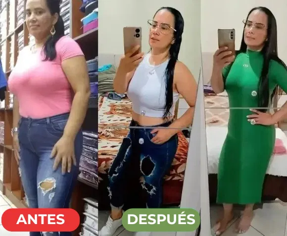

🔥 ¡Historias Reales de Transformación!
📍 Testimonio: Carolina – Ciudad de México

★★★★★
Carolina Gómez
Ciudad de México, MX
Ya había intentado de todo para bajar de peso, pero nada funcionaba. Después de incluir la fórmula de Ozempic Natural en mi rutina, perdí 11 kg sin cambiar nada en mi alimentación. ¡Lo más increíble es que mi hambre y ansiedad disminuyeron de forma natural!